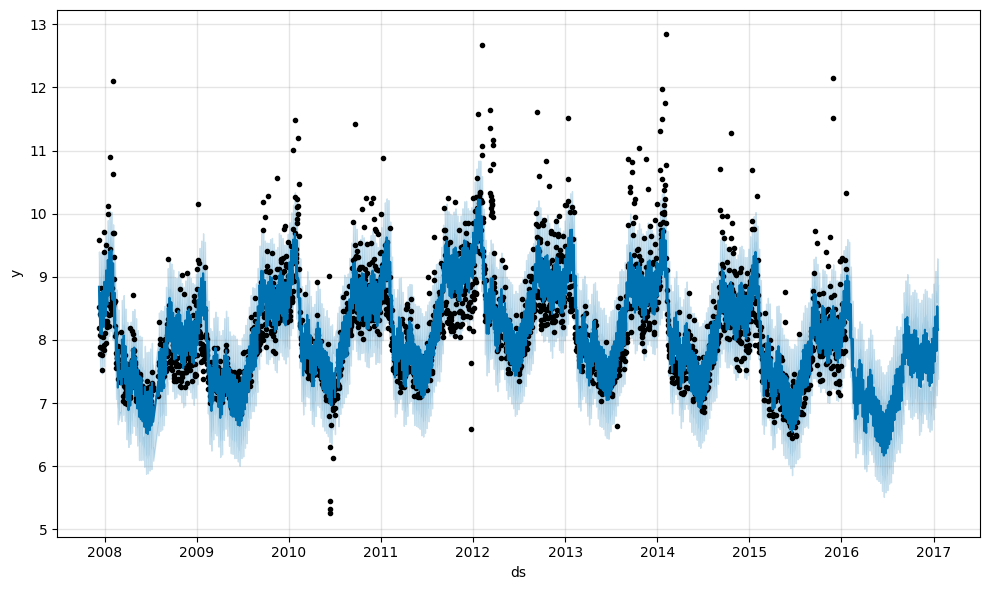
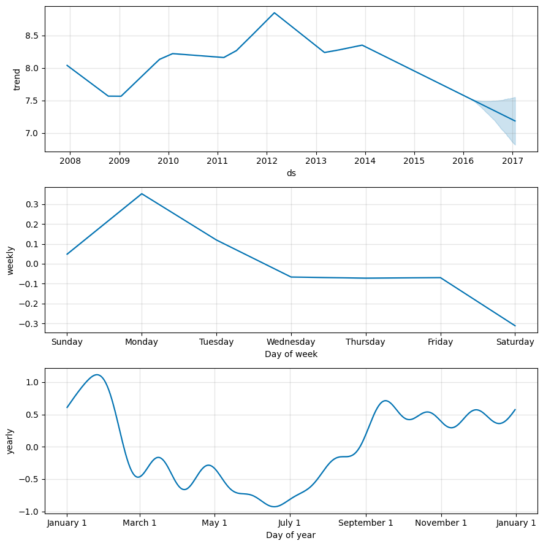
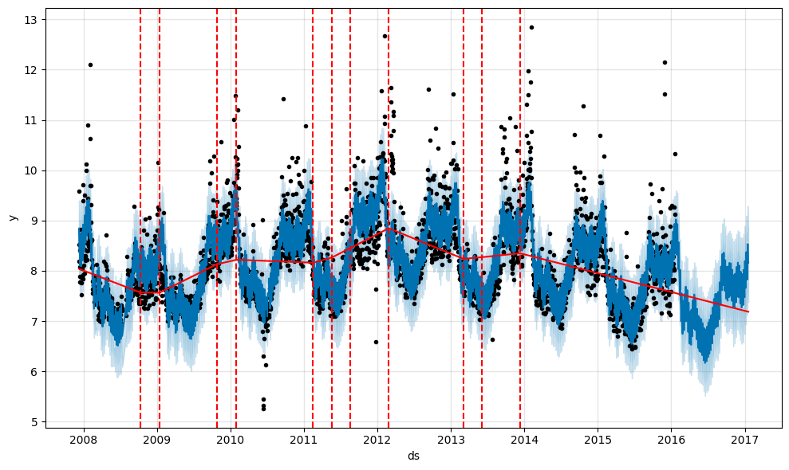
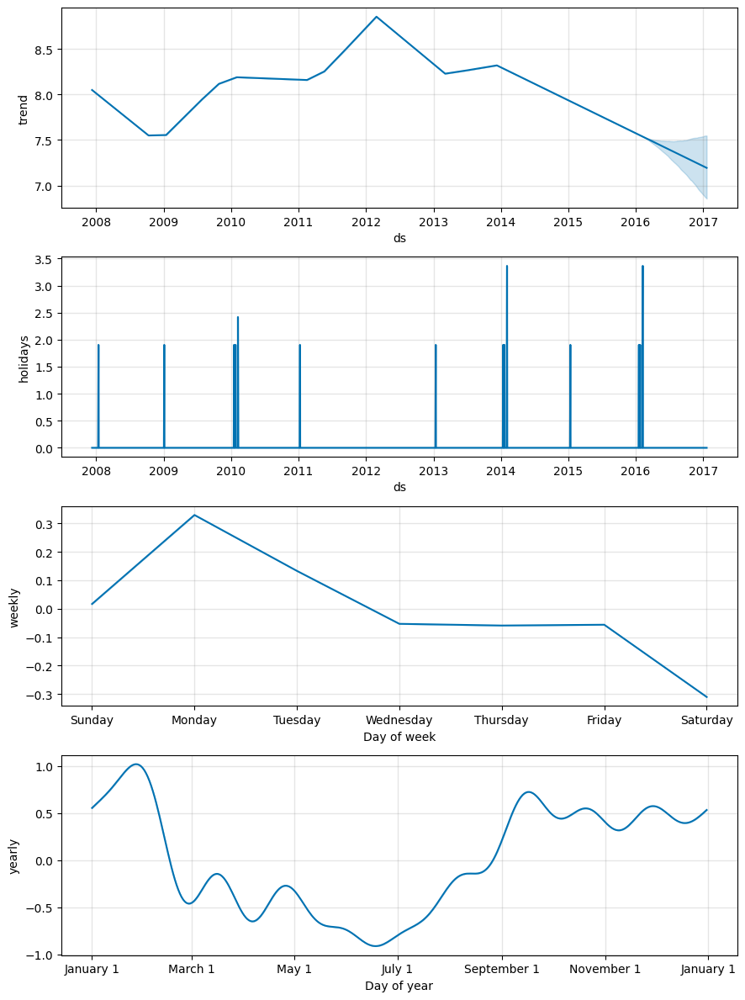

실전에서 시계열 데이터를 사용하기 가장 어려운 점 중 하나는 도메인 지식을 알고 있는 사람과 시계열에 대해 이해하고 있는 사람이 분리되어 있다는 점일 것입니다.
prophet은 도메인 지식만을 가진 사람들도 좀 더 쉽게 시계열 데이터를 분석할 수 있도록 만들어진 라이브러리입니다.
이번 자료에서는 이 라이브러리의 활용법에 대해 알아보겠습니다.
Setting up
from prophet import Prophet
import pandas as pd
url = 'https://raw.githubusercontent.com/facebook/prophet/main/examples/example_wp_log_peyton_manning.csv'
df = pd.read_csv(url)df.tail()| ds | y | |
|---|---|---|
| 2900 | 2016-01-16 | 7.817223 |
| 2901 | 2016-01-17 | 9.273878 |
| 2902 | 2016-01-18 | 10.333775 |
| 2903 | 2016-01-19 | 9.125871 |
| 2904 | 2016-01-20 | 8.891374 |
기초 사용법
m = Prophet() # default growth = 'linear'
m.fit(df)future = m.make_future_dataframe(periods=365)forecast = m.predict(future)
forecast.tail()| ds | trend | yhat_lower | yhat_upper | trend_lower | trend_upper | additive_terms | additive_terms_lower | additive_terms_upper | weekly | weekly_lower | weekly_upper | yearly | yearly_lower | yearly_upper | multiplicative_terms | multiplicative_terms_lower | multiplicative_terms_upper | yhat | |
|---|---|---|---|---|---|---|---|---|---|---|---|---|---|---|---|---|---|---|---|
| 3265 | 2017-01-15 | 7.190267 | 7.460885 | 8.969197 | 6.829090 | 7.548918 | 1.018038 | 1.018038 | 1.018038 | 0.048296 | 0.048296 | 0.048296 | 0.969742 | 0.969742 | 0.969742 | 0.0 | 0.0 | 0.0 | 8.208305 |
| 3266 | 2017-01-16 | 7.189242 | 7.749525 | 9.292008 | 6.827079 | 7.549269 | 1.344067 | 1.344067 | 1.344067 | 0.352288 | 0.352288 | 0.352288 | 0.991779 | 0.991779 | 0.991779 | 0.0 | 0.0 | 0.0 | 8.533309 |
| 3267 | 2017-01-17 | 7.188218 | 7.628419 | 9.068884 | 6.825068 | 7.550103 | 1.132496 | 1.132496 | 1.132496 | 0.119622 | 0.119622 | 0.119622 | 1.012874 | 1.012874 | 1.012874 | 0.0 | 0.0 | 0.0 | 8.320714 |
| 3268 | 2017-01-18 | 7.187193 | 7.440055 | 8.854468 | 6.823057 | 7.551268 | 0.966163 | 0.966163 | 0.966163 | -0.066659 | -0.066659 | -0.066659 | 1.032822 | 1.032822 | 1.032822 | 0.0 | 0.0 | 0.0 | 8.153356 |
| 3269 | 2017-01-19 | 7.186168 | 7.386423 | 8.878864 | 6.821045 | 7.550986 | 0.979110 | 0.979110 | 0.979110 | -0.072268 | -0.072268 | -0.072268 | 1.051379 | 1.051379 | 1.051379 | 0.0 | 0.0 | 0.0 | 8.165279 |
fig1 = m.plot(forecast)
fig2 = m.plot_components(forecast)
상한/하한 지정 법
만약 forecasting에 상한/하한이 있을 경우 cap/floor를 지정할 수 있다.
df['cap'] = 6
df['floor'] = 1.5
m = Prophet(growth = 'logistic') # if there are upper/lower limits
m.fit(df)
future = m.make_future_dataframe(periods=365)
future['cap'] = 6
future['floor'] = 1.5Trend 변경
Prophet에서는 트렌드의 변경 지점을 changepoint라는 이름으로 자동으로 감지합니다.
사용자가 이 changepoint를 변경하거나 시각화하는 것 역시 가능한데, 이에 대해 알아봅시다.
chagepoint는 다음 3개의 parameter로 조절할 수 있습니다 :
* changepoint_range + prophet에서는 시계열 데이터의 80%로 잠재적인 changepoint를 형성하는데 이 크기를 바꿀 수 있습니다. + m = Prophet(changepoint_range = 0.9 * changepoint_prior_scale + changepoint의 유연성을 조절 하는 패러미터로 값이 클수록 variance가 높아집니다. + m = Prophet(change_point_range = 0.1) * changepoints + changepoint가 될 수 있는 날짜를 명시적으로 선택할 수 있습니다. (예 : 코로나 발생) + m = Prophet(changepoints = ['2020-02-05'])
changepoint의 시각화는 아래와 같이 add_changepoints_to_plot를 통해 할 수 있습니다.
from prophet.plot import add_changepoints_to_plot
fig = m.plot(forecast)
a = add_changepoints_to_plot(fig.gca(), m, forecast)
휴일을 명시적으로 지정하여 Seasonality를 조정할 수 있습니다.
하기 코드와 같이 휴일의 과거 / 미래 데이터 모두를 포함시켜 DataFrame을 생성하여 이용가능합니다.
playoffs = pd.DataFrame({
'holiday': 'playoff',
'ds': pd.to_datetime(['2008-01-13', '2009-01-03', '2010-01-16',
'2010-01-24', '2010-02-07', '2011-01-08',
'2013-01-12', '2014-01-12', '2014-01-19',
'2014-02-02', '2015-01-11', '2016-01-17',
'2016-01-24', '2016-02-07']),
'lower_window': 0,
'upper_window': 1,
})
superbowls = pd.DataFrame({
'holiday': 'superbowl',
'ds': pd.to_datetime(['2010-02-07', '2014-02-02', '2016-02-07']),
'lower_window': 0,
'upper_window': 1,
})
holidays = pd.concat((playoffs, superbowls))m = Prophet(holidays=holidays)
forecast = m.fit(df).predict(future)이전과 달리 holidays effect가 추가된 것을 확인할 수 있습니다.
fig = m.plot_components(forecast)
holidays에 overfitting된 것 같으면 holidays_prior_scale를 통해 조정할 수 있습니다:
m = Prophet(holidays=holidays, holidays_prior_scale=0.05)